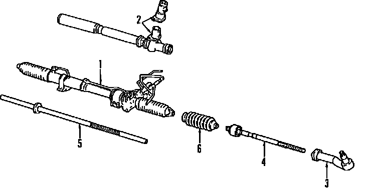
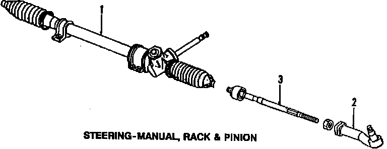
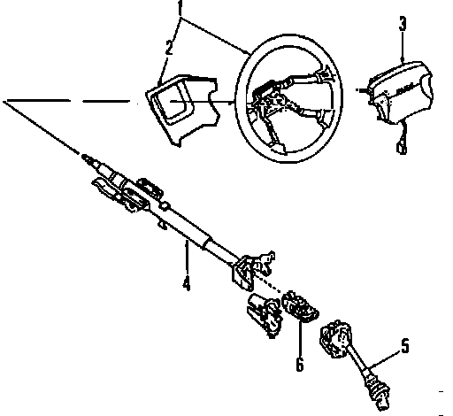

Operation CHARM
: Car repair manuals for everyone.
Home
>>
Mazda
>>
1999
>>
MX-5 Miata L4-1.8L DOHC
>>
Parts and Labor
>>
Steering and Suspension
>>
Steering
>>
Images
Images
Steering Gear, Power:

Steering Gear, Manual:

Steering Column:
